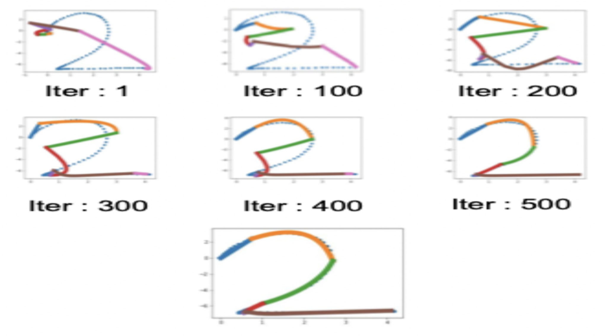

About Me (!! Site under Construction !! )
Hi! I am a first-year MS Robotics student at Carnegie Mellon University advised by Prof. George Kantor. I am interested in machine learning for robot manipulation. Currently, I am trying to build robot farmers.
Before that, I completed my integrated BS/MS degree from IIIT Hyderabad. I was an undergraduate researcher at Robotics Research Center, advised by Prof. K. Madhava Krishna. I spent my summers of 2021 and 2022 working with Prof. David Held at Carnegie Mellon University. I formulated a differentiable version of linear dynamic systems, which could be used as a building block to accelerate the learning and transfer of policies. I also collaborate with Prof. Makarand Tapaswi on a project that aims to learn manipulation policies directly from human demonstrations like these.
If you're looking for collaborators for Robotics/ML projects, please feel free to get in touch!
research
Write about your research here.
news
- Sep 09, 2023: Teaching assistant for Robot Learning Course!
- Sep 09, 2023: Our paper on time-based inductive bias for RL policies got accepted to an IROS Workshop!
- Aug 14, 2023: Started MS Robotics at CMU!
- Apr 07, 2023: Our paper on data-driven inverse kinematics got accepted to IJCNN, 2023!
- Jun 30, 2022: Our paper on skill learning using differentiable physics has been accepted for presentation at IROS, 2022!
- May 26, 2022: Our paper on Monocular Obstacle Avoidance got accepted to CASE,2022!
- Jan 29, 2022: Our paper on sequenced dynamical systems got accepted to GPL Workshop at ICLR, 2022!
- Jun 30, 2021: Our work on Real Time Visual Servoing has been accepted for presentation at IROS,2021!
- May 05, 2021: Started my internship at R-PAD, Carnegie Mellon University!
- May 02, 2020: Started working at Robotics Research Center!
Publications (!! need to update !!)
Representative publications are higlighted.
( “*” denotes equal contribution. )

|
On Time-Indexing as Inductive Bias in Deep RL for Sequential Manipulation Tasks M. Nomaan Qureshi, Ben Eisner, David Held Learning Meets Model-based Methods for Manipulation and Grasping Workshop @ IROS 2023 Making neural network based visual servoing controller real time! Paper | Video | Why? | Bibtex
This is the explanation for the first paper.
Bibtex for the first paper
|

|
Disentangling Planning and Control for Non-Prehensile Tabletop Manipulation Vishal Reddy Mandadi, Kallol Saha, Dipanwita Guhathakurta, M Nomaan Qureshi, Aditya Agarwal, Bipasha Sen, Dipanjan Das, Brojeshwar Bhowmick, Arun Singh, Madhava Krishna CASE, 2023 Making neural network based visual servoing controller real time! Paper | Video | Why? | Bibtex
This is the explanation for the first paper.
Bibtex for the first paper
|

|
Learning Arc-Length Value Function for Fast Time-Optimal Pick and Place Sequence Planning and Execution Prajwal Thakur*, M Nomaan Qureshi*, Arun Kumar Singh, YVS Harish, Pushkal Katara, Houman Masnavi, K Madhava Krishna, Brojeshwar Bhowmick IJCNN, 2023 Making neural network based visual servoing controller real time! Paper | Video | Why? | Bibtex
This is the explanation for the first paper.
Bibtex for the first paper
|

|
Learning Object Manipulation Skills from Video via Approximate Differentiable Physics Vladimir Petrik, M Nomaan Qureshi, Josef Sivic, Makarand Tapaswi IROS, 2022 Making neural network based visual servoing controller real time! Paper | Video | Why? | Bibtex
This is the explanation for the first paper.
Bibtex for the first paper
|

|
Flow Synthesis Based Visual Servoing Frameworks for Monocular Obstacle Avoidance Amidst High-Rises Harshit K Sankhla*, M Nomaan Qureshi*, Shankara Narayanan V*, Vedansh Mittal, Gunjan Gupta, Harit Pandya, K Madhava Krishna CASE, 2022 Making neural network based visual servoing controller real time! Paper | Video | Why? | Bibtex
This is the explanation for the first paper.
Bibtex for the first paper
|
|  |
Deep Sequenced Linear Dynamical Systems for Manipulation Policy Learning M Nomaan Qureshi,Ben Eisner, David Held ICLR 2022 Workshop on Generalizable Policy Learning in Physical World Making neural network based visual servoing controller real time! Paper | Video | Why? | Bibtex
This is the explanation for the first paper.
Bibtex for the first paper
|

|
RTVS: A Lightweight Differentiable MPC Framework for Real-Time Visual Servoing M Nomaan Qureshi*, Pushkal Katara*, Abhinav Gupta*, Harit Pandya, YVS Harish, AadilMehdi Sanchawala, Gourav Kumar, Brojeshwar Bhowmick, K Madhava Krishna IROS, 2021 Making neural network based visual servoing controller real time! Paper | Video | Why? | Bibtex
This is the explanation for the first paper.
Bibtex for the first paper
|
Contact
Please feel free to contact or interact with me through the following links:
- Email: nqafzal [at] gmail
- Google Scholar: M. Nomaan Qureshi
- Twitter: @qunomaan
-
GitHub: qureshinomaan